Продолжаем изучать рациональные числа. В данном уроке мы научимся сравнивать их.
Из предыдущих уроков мы узнали, что чем правее число располагается на координатной прямой, тем оно больше. И соответственно, чем левее располагается число на координатной прямой, тем оно меньше.
Например, если сравнивать числа 4 и 1, то можно сразу ответить, что 4 больше чем 1. Это вполне логичное утверждение и каждый с этим согласится.
В качестве доказательства можно привести координатную прямую. На ней видно, что четвёрка лежит правее единицы
4 > 1
Для этого случая есть и правило, которое при желании можно использовать. Выглядит оно следующим образом:
Из двух положительных чисел больше то число, модуль которого больше.
Чтобы ответить на вопрос какое число больше, а какое меньше, сначала нужно найти модули этих чисел, сравнить эти модули, а потом уже ответить на вопрос.
Например, сравним те же числа 4 и 1, применяя вышеприведенное правило
Находим модули чисел:
|4| = 4
|1| = 1
Сравниваем найденные модули:
4 > 1
Отвечаем на вопрос:
4 > 1
Для отрицательных чисел существует другое правило, выглядит оно следующим образом:
Из двух отрицательных чисел больше то число, модуль которого меньше.
Например, сравним числа −3 и −1
Находим модули чисел
|−3| = 3
|−1| = 1
Сравниваем найденные модули:
3 > 1
Отвечаем на вопрос:
−3 < −1
Нельзя путать модуль числа с самим числом. Частая ошибка многих новичков. К примеру, если модуль числа −3 больше, чем модуль числа −1, это не означает, что число −3 больше, чем число −1.
Число −3 меньше, чем число −1. Это можно понять, если воспользоваться координатной прямой
Видно, что число −3 лежит левее, чем −1. А мы знаем, что чем левее, тем меньше.
Если сравнивать отрицательное число с положительным, то ответ будет напрашиваться сам. Любое отрицательное число будет меньше любого положительного числа. Например, −4 меньше, чем 2
−4 < 2
Видно, что −4 лежит левее, чем 2. А мы знаем, что «чем левее, тем меньше».
Здесь в первую очередь нужно смотреть на знаки чисел. Минус перед числом будет говорить о том, что число отрицательное. Если знак числа отсутствует, то число положительное, но вы можете записать его для наглядности. Напомним, что это знак плюса
−4 < +2
Мы рассмотрели в качестве примера целые числа, вида −4, −3 −1, 2. Сравнить такие числа, а также изобразить на координатной прямой не составляет особого труда.
Намного сложнее сравнивать другие виды чисел, такие как обыкновенные дроби, смешанные числа и десятичные дроби, некоторые из которых являются отрицательными. Здесь уже в основном придётся применять правила, потому что точно изобразить такие числа на координатной прямой не всегда возможно. В некоторых случаях, число надо будет видоизменять, чтобы сделать его более простым для сравнения и восприятия.
Пример 1. Сравнить рациональные числа
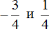
Итак, требуется сравнить отрицательное число с положительным. Любое отрицательное число меньше любого положительного числа. Поэтому не теряя времени отвечаем, что  меньше, чем
меньше, чем 
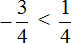
Пример 2. Сравнить рациональные числа  и
и 
Требуется сравнить два отрицательных числа. Из двух отрицательных чисел больше то, модуль которого меньше.
Находим модули чисел:
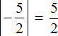
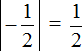
Сравниваем найденные модули:
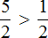
Согласно правилу, из двух отрицательных чисел больше то число, модуль которого меньше. Значит рациональное  больше, чем
больше, чем  , потому что модуль числа
, потому что модуль числа  меньше, чем модуль числа
меньше, чем модуль числа 
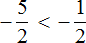
Пример 3. Сравнить числа 2,35 и 
Требуется сравнить положительное число с отрицательным. Любое положительное число больше любого отрицательного числа. Поэтому не теряя времени отвечаем что 2,35 больше, чем 
2,35 > 
Пример 4. Сравнить рациональные числа  и
и 
Требуется сравнить два отрицательных числа. Из двух отрицательных чисел больше то число, модуль которого меньше.
Находим модули чисел:
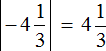
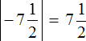
Сравниваем найденные модули. Но сначала приведём их к понятному виду, чтобы проще было сравнить, а именно переведём в неправильные дроби и приведём к общему знаменателю
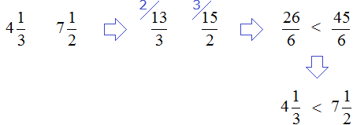
Согласно правилу, из двух отрицательных чисел больше то число, модуль которого меньше. Значит рациональное  больше, чем
больше, чем  , потому что модуль числа
, потому что модуль числа  меньше, чем модуль числа
меньше, чем модуль числа 
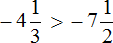
Пример 5. Сравнить рациональные числа 0 и
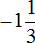
Требуется сравнить ноль с отрицательным числом. Ноль больше любого отрицательного числа, поэтому не теряя времени отвечаем, что 0 больше, чем
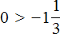
Пример 6. Сравнить рациональные числа 0 и
Требуется сравнить ноль с положительным числом. Ноль меньше любого положительного числа, поэтому не теряя времени отвечаем, что 0 меньше, чем
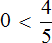
Пример 7. Сравнить рациональные числа 4,53 и 4,403
Требуется сравнить два положительных числа. Из двух положительных чисел больше то число, модуль которого больше.
Сделаем в обеих дробях количество цифр после запятой одинаковым. Для этого в дроби 4,53 припишем в конце один ноль
4,530
Далее применим правило сравнения положительных чисел.
Находим модули чисел
|4,530| = 4,530
|4,403| = 4,403
Сравниваем найденные модули:
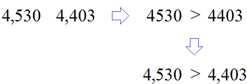
Согласно правилу, из двух положительных чисел больше то число, модуль которого больше. Значит рациональное число 4,53 больше, чем 4,403 потому что модуль числа 4,53 больше, чем модуль числа 4,403
4,53 > 4,403
Пример 8. Сравнить рациональные числа  и
и
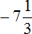
Требуется сравнить два отрицательных числа. Из двух отрицательных чисел больше то число, модуль которого меньше.
Находим модули чисел:
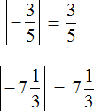
Сравниваем найденные модули. Но сначала приведём их к понятному виду, чтобы проще было сравнить, а именно переведём смешанное число  в неправильную дробь, затем приведём обе дроби к общему знаменателю:
в неправильную дробь, затем приведём обе дроби к общему знаменателю:
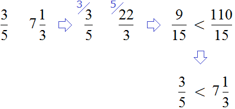
Согласно правилу, из двух отрицательных чисел больше то число, модуль которого меньше. Значит рациональное  больше, чем , потому что модуль числа
больше, чем , потому что модуль числа  меньше, чем модуль числа
меньше, чем модуль числа
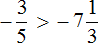
Сравнивать десятичные дроби намного проще, чем обыкновенные дроби и смешанные числа. В некоторых случаях, посмотрев на целую часть такой дроби, можно сразу ответить на вопрос какая дробь больше, а какая меньше.
Чтобы сделать это, нужно сравнить модули целых частей. Это позволит быстро ответить на вопрос в задаче. Ведь как известно, целые части в десятичных дробях имеют вес больший, чем дробные.
Пример 9. Сравнить рациональные числа 15,4 и 2,1256
Модуль целой части дроби 15,4 больше, чем модуль целой части дроби 2,1256
|15| = 15
|2| = 2
15 > 2
поэтому и дробь 15,4 больше, чем дробь 2,1256
15,4 > 2,1256
Другими словами, нам не пришлось тратить время на дописывание нулей дроби 15,4 и сравнивать получившиеся дроби, как обычные числа
15,4000 2,1256
154000 > 21256
Правила сравнения остаются всё теми же. В нашем случае мы сравнивали положительные числа.
Пример 10. Сравнить рациональные числа −15,2 и −0,152
Требуется сравнить два отрицательных числа. Из двух отрицательных чисел больше то число, модуль которого меньше. Но мы сравним только модули целых частей
|−15| = 15
|−0| = 0
15 > 0
Видим, что модуль целой части дроби −15,2 больше, чем модуль целой части дроби −0,152.
А значит рациональное −0,152 больше, чем −15,2 потому что модуль целой части числа −0,152 меньше, чем модуль целой части числа −15,2
−0,152 > −15,2
Пример 11. Сравнить рациональные числа −3,4 и −3,7
Требуется сравнить два отрицательных числа. Из двух отрицательных чисел больше то число, модуль которого меньше. Но мы сравним только модули целых частей. Но проблема в том, что модули целых чисел равны:
|−3| = 3
|−3| = 3
3 = 3
В этом случае придётся пользоваться старым методом: найти модули рациональных чисел и сравнить эти модули
|−3,4| = 3,4
|−3,7| = 3,7
Сравниваем найденные модули:
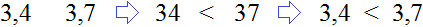
Согласно правилу, из двух отрицательных чисел больше то число, модуль которого меньше. Значит рациональное −3,4 больше, чем −3,7 потому что модуль числа −3,4 меньше, чем модуль числа −3,7
−3,4 > −3,7
Пример 12. Сравнить рациональные числа 0,(3) и
Требуется сравнить два положительных числа. Причем сравнить периодическую дробь с простой дробью.
Переведём периодическую дробь 0,(3) в обыкновенную дробь и сравним её с дробью . После перевода периодической дроби 0,(3) в обыкновенную, она обращается в дробь 
Находим модули чисел:
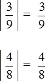
Сравниваем найденные модули. Но сначала приведём их к понятному виду, чтобы проще было сравнить, а именно приведём к общему знаменателю:
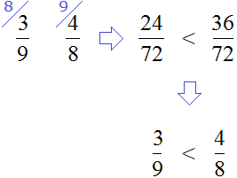
Согласно правилу, из двух положительных чисел больше то число, модуль которого больше. Значит рациональное число больше, чем 0,(3) потому что модуль числа больше, чем модуль числа 0,(3)
0,(3) <